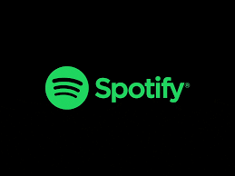

1. Spotify
Spotify is one of the world's largest music streaming service providers, with over 356 million monthly active users, including 158 million paying subscribers, as of March 2021. The service is available on most modern devices including Windows, macOS, and Linux computers, iOS and Android smartphones and tablets and AI enabled smart speakers such as Amazon Echo and Google Home.
2. Gaana
Gaana.com is India's largest commercial music streaming service with over 200 million monthly users. Gaana.com allows users to make their playlists public so that they can be seen by other users. They can view and favorite playlists. Its mobile app was launched to support almost all popular operating systems like Android, iOS and Windows.[4] Gaana is priced at ₹99 per month (within India) or $3.99 per month (outside India)

3. Youtube Music
YouTube Music is a music streaming service developed by YouTube, a subsidiary of Google. It provides a tailored interface for the service oriented towards music streaming, allowing users to browse through songs and music videos on YouTube based on genres, playlists, and recommendations. The service also offers a premium tier, which enables ad-free playback audio-only background playback, and downloading songs for offline playback. These subscription benefits are also offered to subscribers of Google Play Music and YouTube Premium.
4. Wynk Music
Wynk Music is now
India’s #1 music app
by Daily Active Users. The performance metric underlines the massive user preference for Wynk Music when it comes to consuming music on smartphone. The team is focused on building the most personalised music experience for our customers. Wynk’s deep catalogue of songs combined with a holistic understanding of our customer’s preferences allows us to build an incredible product. And Airtel users get a free subscription to millions of songs in Wynk through the Thanks program.
5. Hungama Music
Hungama Music: From the hottest Hindi songs and the coolest Regional hits to chartbusting English songs; from the latest trending artists to beloved retro favorites and remixes – we have songs to match your every mood! Hungama Music App provides free & unlimited access to listen to music or download songs & music videos from Bollywood, Hindi, English, Tamil, Telugu, Punjabi & many other Indian languages. It offers unlimited streaming and caching of audio and video songs